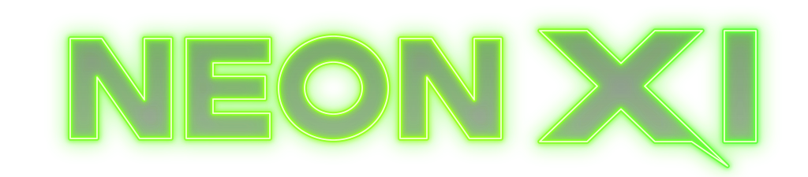
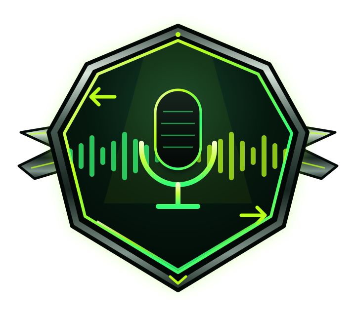

RE:VERSE

SIDE GAMERE:VERSE
Duy, ters sesi taklit et, futbolcuyu tahmin et.

OYUN MODUNU SEÇ
Her turda roller değişir. Futbolcu seçilince telefonu rakibine verirsin.
Solo modda yapay zekâ gizli bir futbolcu belirler.
NASIL OYNANIR?
A bir futbolcunun adını söyler. B ters çevrilmiş sesi dinler, taklit ederek kaydeder ve kendi kaydının tersini dinleyip futbolcuyu tahmin eder.
İkinci oyuncu odaya katıldığında oyun başlayacak.
Futbolcuyu söyle
İstediğin futbolcunun adını normal şekilde söyle. Sistem duyduğunu yazıya dökecek.
Doğru anladım mı?
Sistem ismi yanlış duyduysa aşağıdaki alandan düzeltebilirsin.
A oyuncusunun ters sesini dinle
Bu sesi taklit ederek mikrofon tuşuyla kaydet. Bitirdiğinde aynı tuşa tekrar bas.
Kendi ters kaydını dinle ve cevapla
Kaydettiğin ses tekrar ters çevrildi. Dinle ve A oyuncusunun seçtiği futbolcuyu tahmin et.
Tur tamamlandı
Telefonu rakibine ver
Hazır olduğunda dokun; ters sesi dinleyip taklit edeceksin.
Rakip oynuyor
Rakibinin hamlesi tamamlanınca burada görünecek.